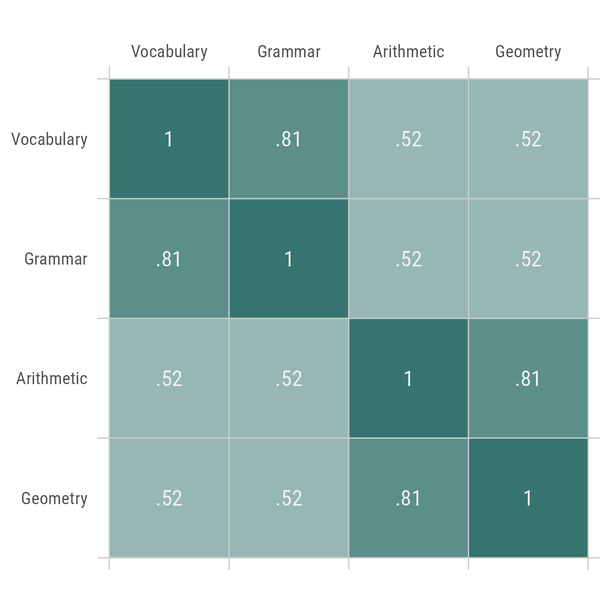
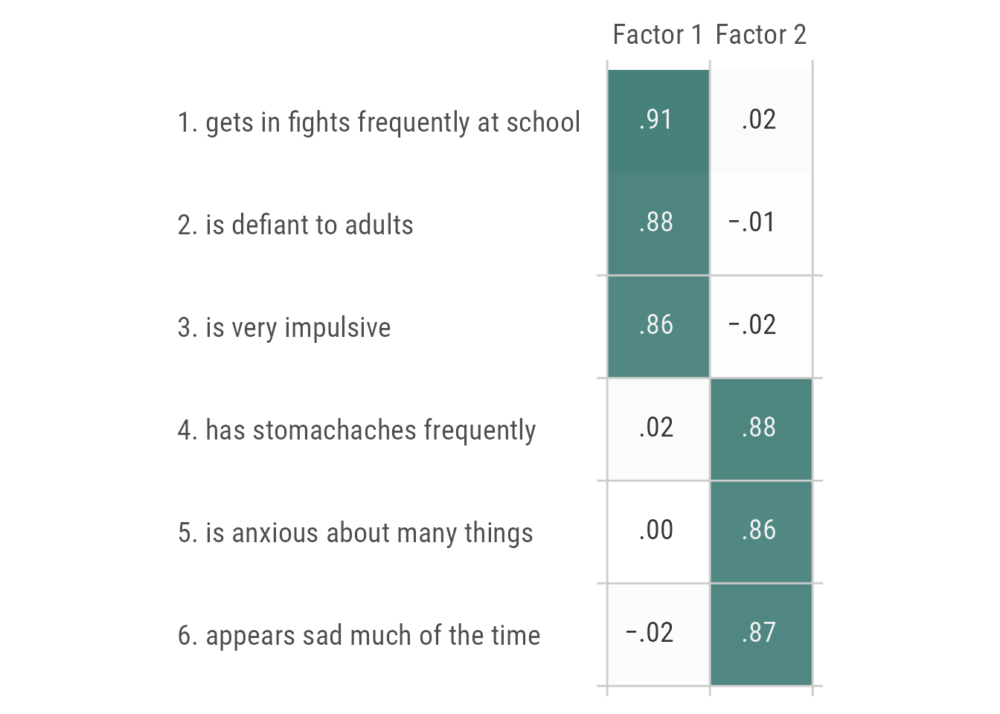
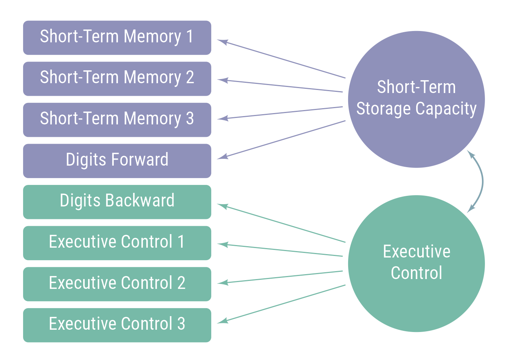

![]()
When measuring characteristics of physical objects, there may be some disagreement about the best methods to use but there is little disagreement about which dimensions are being measured. We know that we are measuring length when we use a ruler and we know that we are measuring temperature when we use a thermometer. It is true that heating some materials makes them expand but we are virtually never confused about whether heat and length represent distinct dimensions that are independent of each other. That is, they are independent of each other in the sense that things can be cold and long, cold and short, hot and long, or hot and short.
Unfortunately, we are not nearly as clear about what we are measuring when we attempt to measure psychological dimensions such as personality traits, motivations, beliefs, attitudes, and cognitive abilities. Psychologists often disagree not only about what to name these dimensions but also about how many dimensions there are to measure. For example, you might think that there exists a personality trait called niceness. Another person might disagree with you, arguing that niceness is a vague term that lumps together 2 related but distinguishable traits called friendliness and kindness. Another person could claim that kindness is too general and that we must separate kindness with friends from kindness with strangers.
As you might imagine, these kinds of arguments can quickly lead to hypothesizing the existence of as many different traits as our imaginations can generate. The result would be a hopeless confusion among psychological researchers because they would have no way to agree on what to measure so that they can build upon one another’s findings. Fortunately, there are ways to put some limits on the number of psychological dimensions and come to some degree of consensus about what should be measured. One of the most commonly used of such methods is called factor analysis.
Although the mathematics of factor analysis is complicated, the logic behind it is not difficult to understand. The assumption behind factor analysis is that things that co-occur tend to have a common cause. For example, fevers, sore throats, stuffy noses, coughs, and sneezes tend to occur at roughly the same time in the same person. Often, they are caused by the same thing, namely, the virus that causes the common cold. Note that although the virus is one thing, its manifestations are quite diverse. In psychological assessment research, we measure a diverse set of abilities, behaviors and symptoms and attempt to deduce which underlying dimensions cause or account for the variations in behavior and symptoms we observe in large groups of people. We measure the relations between various behaviors, symptoms, and test scores with correlation coefficients and use factor analysis to discover patterns of correlation coefficients that suggest the existence of underlying psychological dimensions.
All else being equal, a simple theory is better than a complicated theory. Therefore, factor analysis helps us discover the smallest number of psychological dimensions (i.e., factors) that can account for the correlation patterns in the various behaviors, symptoms, and test scores we observe. For example, imagine that we create 4 different tests that would measure people’s knowledge of vocabulary, grammar, arithmetic, and geometry. If the correlations between all of these tests were 0 (i.e., high scorers on one test are no more likely to score high on the other tests than low scorers), then the factor analysis would suggest to us that we have measured 4 distinct abilities and no simplification of the data is possible. The correlations between all the tests are displayed in Table 1.
In Figure 1, the theoretical model that would be implied is that there are 4 abilities (shown as circles) that influence performance on 4 tests (shown as squares). The numbers beside the arrows imply that the abilities and the tests have high but imperfect correlations of 0.9.

Of course, you probably recognize that it is very unlikely that the correlations between these tests would be 0. Therefore, imagine that the correlation between the vocabulary and grammar tests is quite high: .81. This means that high scorers on vocabulary are likely to also score high on grammar and low scorers on vocabulary are likely to score low on grammar. The correlation between arithmetic and geometry is .81 also. Furthermore, the correlations between the language tests and the mathematics tests is 0. The new correlation matrix is in Table 2.

Factor analysis would suggest that we have measured not 4 distinct abilities but rather 2 abilities. Researchers interpreting the results of the factor analysis would have to use their best judgment to decide what to call these 2 abilities. In this case, it would seem reasonable to call them language ability and mathematical ability. These 2 abilities (shown below as circles in Figure 2) influence performance on 4 tests (shown as squares).
Now imagine that the correlations between all 4 tests is equally high, as shown in Table 3. That is, for example, vocabulary is just as strongly correlated with geometry as it is with grammar.
In this case, factor analysis would suggest that the simplest explanation for this pattern of correlations is that there is just 1 factor that causes all of these tests to be equally correlated. We might call this factor general academic ability, as shown in Figure 3.
In reality, if you were to actually measure these 4 abilities, the results would not be so clear. It is likely that all of the correlations would be positive and substantially above 0. It is also likely that the language subtests would correlate more strongly with each other than with the mathematical subtests. The new correlation matrix is in Table 4.

Given the correlations in Table 4, factor analysis would suggest that language and mathematical abilities are distinct but not entirely independent from each other. That is, language abilities and mathematics abilities are substantially correlated with each other. Factors can be correlated for a variety of reasons, but one possibility is that there is a general academic (or intellectual) ability that influences performance in all academic areas. Figure 4, abilities are arranged in hierarchies with general abilities influencing narrow abilities.
Exploratory Factor Analysis
Factor analysis can help researchers decide how best to summarize large amounts of information about people using just a few scores. For example, when we ask parents to complete questionnaires about behavior problems their children might have, the questionnaires can have hundreds of items. It would take too long and would be too confusing to review every item. Factor analysis can simplify the information while minimizing the loss of detail. Here is an example of a short questionnaire that factor analysis can be used to summarize.
On a scale of 1 to 5, compared to other children his or her age, my child…
- gets in fights frequently at school
- is defiant to adults
- is very impulsive
- has stomachaches frequently
- is anxious about many things
- appears sad much of the time
If we give this questionnaire to a large, representative sample of parents, we can calculate the correlations between the items (Table 5).
Using this set of correlation coefficients, factor analysis suggests that there are 2 factors being measured by this behavior rating scale. The logic of factor analysis suggests that the reason items 1-3 have high correlations with each other is that each of them has a high correlation with the first factor. Similarly, items 4-6 have high correlations with each other because they have high correlations with the second factor. The correlations that the items have with the hypothesized factors are called factor loadings. The factor loadings can be seen in Table 6

Factor analysis tells us which items “load” on which factors but it cannot interpret the meaning of the factors. Usually researchers look at all of the items that load on a factor and use their intuition or knowledge of theory to identify what the items have in common. In this case, Factor 1 could receive any number of names such as Conduct Problems, Acting Out, or Externalizing Behaviors. Likewise, Factor 2 could be called Mood Problems, Negative Affectivity, or Internalizing Behaviors. Thus, the problems on this behavior rating scale can be summarized fairly efficiently with just 2 scores.
In this example, a reduction of 6 scores to 2 scores may not seem terribly useful. In actual behavior rating scales, factor analysis can reduce the overwhelming complexity of hundreds of different behavior problems to a more manageable number of scores that help professionals more easily conceptualize individual cases.
It should be noted that factor analysis also calculates the correlation among factors. If a large number of factors are identified and there are substantial correlations (i.e., significantly larger than 0) among factors, this new correlation matrix can be factor analyzed also to obtain second-order factors. These factors, in turn, can be analyzed to obtain third-order factors. Theoretically, it is possible to have even higher order factors but most researchers rarely find it necessary to go beyond third-order factors. The g-factor from intelligence test data is an example of a third-order factor that emerges because all tests of cognitive abilities are positively correlated.
In Table 6, the 2 factors have a correlation of .46, suggesting that children who have externalizing problems are also at risk of having internalizing problems. It is therefore reasonable to calculate a second-order factor score that measures the overall level of behavior problems.
This example illustrates the most commonly used type of factor analysis: exploratory factor analysis. Exploratory factor analysis is helpful when we wish to summarize data efficiently, we are not sure how many factors are present in our data, or we are not sure which items load on which factors.
Confirmatory Factor Analysis
Confirmatory factor analysis is a method that researchers can use to test highly specific hypotheses. For example, a researcher might want to know if the 2 different types of items on the WISC-IV Digit Span subtest measures the same ability or 2 different abilities. On the Digits Forward type of item, the child must repeat a string of digits in the same order in which they were heard. On the Digits Backward type of item, the child must repeat the string of digits in reverse order. Some researchers believe that repeating numbers verbatim measures auditory short-term memory storage capacity and that repeating numbers in reverse order measures executive control, the ability to allocate attentional resources efficiently to solve multi-step problems. Typically, clinicians add the raw scores of both types of items to produce a single score. If the 2 item types measure different abilities, adding the raw scores together is like adding apples and orangutans. If, however, they measure the same ability, adding the scores together is valid and will produce a more reliable score than using separate scores.
To test this hypothesis, we can use confirmatory factor analysis to see if the 2 item types measure different abilities. We would need to identify or invent several tests that are likely to measure the 2 separate abilities that we believe are measured by the 2 types of Digit Span items. Usually, using 3 tests per factor is sufficient.
Next, we specify the hypotheses, or models, we wish to test:
All of the tests measure the same ability
A graphical representation of a hypothesis in confirmatory factor analysis is called a path diagram. Tests are drawn with rectangles and hypothetical factors are drawn with ovals. The correlations between tests and factors are drawn with arrows. The path diagram for this hypothesis would look like Figure 5.
Both Digits Forward and Digits Backward measure short-term memory storage capacity and are distinct from executive control.
The path diagram would look like this (the curved arrow allows for the possibility that the 2 factors might be correlated)
Digits Forward and Digits Backward measure different abilities.
If Digits Forward is primarily a measure of Short-Term Storage, and Digits Backward is primary a measure of Executive control, the path diagram would look like Figure 7

Confirmatory factor analysis produces a number of statistics, called fit statistics that tell us which of the models or hypotheses we tested are most in agreement with the data. Studying the results, we can select the best model or perhaps generate a new model if none of them provide a good “fit” with the data. With structural equation modeling, a procedure that is very similar to confirmatory factor analysis, we can test extremely complex hypotheses about the structure of psychological variables.
Note
Originally posted 2014-01-13 on AssessingPsyche. The article has been revised several times since it was written originally for Cohen & Swerdlik’s Psychological Testing and Assessment: An Introduction To Tests and Measurement (Ninth Edition)
Citation
BibTeX citation:
@misc{schneider2014,
author = {Schneider, W. Joel},
title = {A {Gentle,} {Non-Technical} {Introduction} to {Factor}
{Analysis}},
date = {2014-01-13},
url = {https://wjschne.github.io/AssessingPsyche/2014-01-13-gentle-introduction-to-factor-analysis/},
langid = {en}
}
For attribution, please cite this work as:
Schneider, W. J. (2014, January 13). A Gentle, Non-Technical
Introduction to Factor Analysis. AssessingPsyche. https://wjschne.github.io/AssessingPsyche/2014-01-13-gentle-introduction-to-factor-analysis/